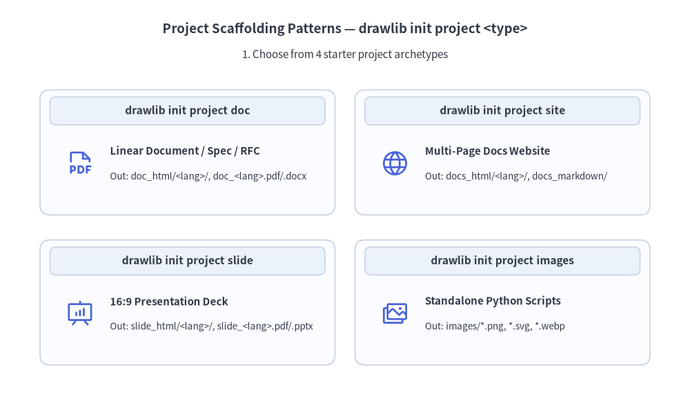
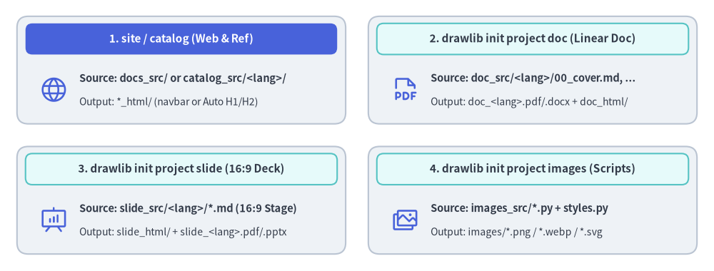

プロジェクト構成とビルド
Drawlib は単なる描画ライブラリではなく、実行可能な Python による図解とバージョン管理された技術ドキュメントを統合する 包括的なドキュメントコンパイラ です。

コードとしてのドキュメント（Documentation-as-Code）ワークフロー
静的な Wiki に文章を書き、PNG のスクリーンショットを手作業でコピー＆ペーストする従来の運用に代わり、Drawlib は AI コーディングエージェントを活用したクリーンで再現性の高い Human-in-the-Loop ワークフローを実現します。
- Day 1 — 初期化・執筆・コミット: AI エージェントに初期プロジェクトの作成（
drawlib init project docによるdrawlib.toml、styles.py、utils.py、および任意のtemplate.html/style.cssの設定）を依頼し、続けて仕様書の執筆とビルド（```drawlibブロックを含むdoc_src/<lang>/*.mdからdoc_markdown/、doc_html/、doc_<lang>.pdf、doc_<lang>.docxを生成）を指示したうえで、成果物をレビューして Git にコミットします。 - Day 2 以降 — 日々の差分アップデート: アプリケーションコードが進化したら、AI エージェントにドキュメントの更新（
.md章ファイルの編集と.drawlib/cache.dbキャッシュを活用した./doc_src/build.shの実行）を依頼し、更新された成果物をコードと一緒にコミットするだけで常に同期を維持できます。
鉄則: <name>_src/ が唯一の信頼できる情報源（Single Source of Truth）
- Markdown ファイルや Python コードの編集は、必ずソースディレクトリ（例:
docs_src/）内で行ってください。 - 出力ディレクトリや生成ファイル（
docs_markdown/、docs_html/、*_<lang>.pdf、*_<lang>.docx、*_<lang>.pptx）を直接編集しないでください。これらはビルド時に完全に上書きされる成果物です。
1. プロジェクトのスキャフォールディング（drawlib init project）
コマンド 1 つでプロジェクトの完全なテンプレートを生成できます（Python プロジェクトでは uv run drawlib、Go・Rust・TypeScript・Java リポジトリや非開発の文書・スライドフォルダではゼロインストールの uvx drawlib をそのまま使用できます）。
# List available starter project templates
$ uv run drawlib init project list
# Initialize a multi-page documentation website (creates docs_src/)
$ uv run drawlib init project site
# Or scaffold into a custom target name (positional argument, e.g., mybook_src/ -> mybook_html/):
$ uv run drawlib init project site mybook
# Optional flags: --style (-s) for theme and --lang (-l) for single or multi-locale (e.g. en,ja)
$ uv run drawlib init project doc rbac -s google -l en,ja
Drawlib は 5 種類のスタータープロジェクトタイプをサポートしています（doc・site・catalog・slide は標準で <src_dir>/<lang>/ と drawlib.toml の [i18n] を使用します）。
doc: HTML（doc_html/）、PDF（doc_<lang>.pdf）、編集可能な MS Word（doc_<lang>.docx）、Markdown（doc_markdown/）、および図解画像（doc_images/）へコンパイルされる単一構成の技術文書・仕様書・RFC・レポート。site: マルチページのドキュメントサイト（docs_html/）、Markdown サイト（docs_markdown/）、および図解画像（docs_images/）。catalog:# H1/## H2自動サイドバー・セマンティックバッジ・/リアルタイム絞り込みを備えた図解付きカタログ & リファレンスサイト（catalog_html/、catalog_markdown/、catalog_images/）。API・CLI リファレンスやデータスキーマ、サービス台帳に最適です。slide: Web スライドデッキ（slide_html/）、ベクター PDF（slide_<lang>.pdf）、編集可能な MS PowerPoint（slide_<lang>.pptx）、および図解画像（slide_images/）へコンパイルされる 16:9 プレゼンテーションスライド。images: 画像ファイル（images/*.pngなど）へ一括コンパイルされるスタンドアロンの Python 図解スクリプト群（images_src/*.py）。

Source Code
from drawlib.canvas import save, setup
from drawlib.icons import phosphor
from drawlib.shapes import rectangle
from drawlib.styles import Styles
from drawlib.text import text
setup(width=126, height=48)
hdr_white = Styles.WhiteBold.patch(text_size=11.0)
hdr_dark = Styles.DarkBold.patch(text_size=11.0)
body_bold = Styles.DarkBold.patch(text_size=10.5, halign="left")
body_sub = Styles.Dark.patch(text_size=10.0, halign="left")
# 1. Top-Left: drawlib init project site / catalog (Hero header)
rectangle((32.0, 35.5), width=58.0, height=19.0, style=Styles.Neutral.patch(shape_r=2.0))
rectangle((32.0, 41.0), width=55.0, height=5.5, style=Styles.PrimaryFlat.patch(shape_r=1.2), text="1. site / catalog (Web & Ref)", text_style=hdr_white)
phosphor.globe((9.5, 32.0), width=5.2, style=Styles.Primary)
text((14.0, 34.0), "Source: docs_src/ or catalog_src/<lang>/", style=body_bold)
text((14.0, 29.8), "Output: *_html/ (navbar or Auto H1/H2)", style=body_sub)
# 2. Top-Right: drawlib init project doc
rectangle((94.0, 35.5), width=58.0, height=19.0, style=Styles.Neutral.patch(shape_r=2.0))
rectangle((94.0, 41.0), width=55.0, height=5.5, style=Styles.SecondaryNeutral.patch(shape_r=1.2), text="2. drawlib init project doc (Linear Doc)", text_style=hdr_dark)
phosphor.file_pdf((71.5, 32.0), width=5.2, style=Styles.Primary)
text((76.0, 34.0), "Source: doc_src/<lang>/00_cover.md, ...", style=body_bold)
text((76.0, 29.8), "Output: doc_<lang>.pdf/.docx + doc_html/", style=body_sub)
# 3. Bottom-Left: drawlib init project slide
rectangle((32.0, 12.5), width=58.0, height=19.0, style=Styles.Neutral.patch(shape_r=2.0))
rectangle((32.0, 18.0), width=55.0, height=5.5, style=Styles.SecondaryNeutral.patch(shape_r=1.2), text="3. drawlib init project slide (16:9 Deck)", text_style=hdr_dark)
phosphor.presentation_chart((9.5, 9.0), width=5.2, style=Styles.Primary)
text((14.0, 11.0), "Source: slide_src/<lang>/*.md (16:9 Stage)", style=body_bold)
text((14.0, 6.8), "Output: slide_html/ + slide_<lang>.pdf/.pptx", style=body_sub)
# 4. Bottom-Right: drawlib init project images
rectangle((94.0, 12.5), width=58.0, height=19.0, style=Styles.Neutral.patch(shape_r=2.0))
rectangle((94.0, 18.0), width=55.0, height=5.5, style=Styles.SecondaryNeutral.patch(shape_r=1.2), text="4. drawlib init project images (Scripts)", text_style=hdr_dark)
phosphor.images((71.5, 9.0), width=5.2, style=Styles.Primary)
text((76.0, 11.0), "Source: images_src/*.py + styles.py", style=body_bold)
text((76.0, 6.8), "Output: images/*.png / *.webp / *.svg", style=body_sub)
save()
2. ワンコマンドによるビルド（drawlib build）
プロジェクトの初期化後は、生成された build.sh スクリプトまたは drawlib build CLI を使ってドキュメントをコンパイルします。
# Run the project master build script
$ ./docs_src/build.sh
# Or compile using the CLI subcommands directly:
$ uv run drawlib build html docs_src/ -o docs_html/
$ uv run drawlib build markdown docs_src/ -o docs_markdown/
$ uv run drawlib build pdf doc_src/ -o doc.pdf --toc # -> doc_<lang>.pdf
$ uv run drawlib build docx doc_src/ -o doc.docx --generate-index # -> doc_<lang>.docx
$ uv run drawlib build slide slide_src/ -o slide_html/
$ uv run drawlib build pptx slide_src/ -o slide.pptx # -> slide_<lang>.pptx
$ uv run drawlib build image images_src/ -o images/
# Force a clean re-render bypassing the SQLite build cache (.drawlib/cache.db):
$ uv run drawlib build html docs_src/ -o docs_html/ --no-cache
ビルドプロセスでは以下の処理が順番に実行されます。
- Markdown ドキュメント内のすべての
drawlibコードブロック（またはimages_src/内の.pyスクリプト）を検出します。 - 各コードブロックを独立したメモリ空間で実行し、ベクター／ラスター図解をレンダリングします。
- レンダリングされた画像を
.drawlib/cache.dbに決定論的にキャッシュします（変更されたコードブロックやスタイルのみが再描画されます。強制的に再レンダリングする場合は--no-cacheを渡すかuv run drawlib cache clear --imagesを実行します）。 - 画像リンクが検証された状態で、最終的な HTML サイト、スライドデッキ、ベクター PDF、編集可能な MS Word（
.docx）、MS PowerPoint（.pptx）、またはレンダリング済み Markdown ドキュメントを生成します。
3. ローカルプレビューとリンク検証（drawlib serve）
リンク切れやアセット欠損の自動事前チェック機能を備えたローカルサーバーで、コンパイル済みの HTML サイトをプレビューできます。
# Start local HTTP preview server on http://localhost:8000
$ uv run drawlib serve docs_html/
# Run headless broken-link and missing-asset verification only (ideal for CI/CD)
$ uv run drawlib serve docs_html/ --check
ブラウザで http://localhost:8000 を開くと、ドキュメントサイト全体、ナビゲーションサイドバー、レスポンシブデザインを確認できます。
[!NOTE] コードブロック属性（
code=show,code=fold,caption="..."）、カスタム HTML テンプレート、CSS テーマ設定、キャッシュ機構、および PDF / MS Word（.docx）/ MS PowerPoint（.pptx）出力の詳細については、第 9 章: ドキュメントビルダと CLI を参照してください。